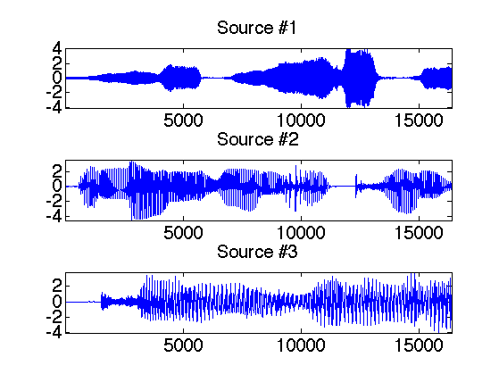
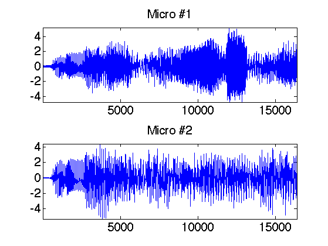
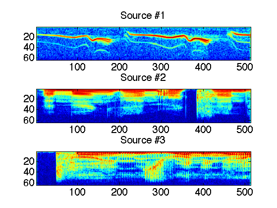
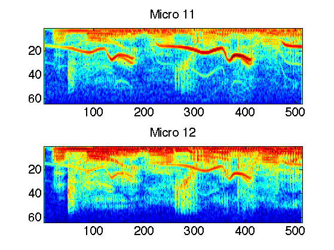
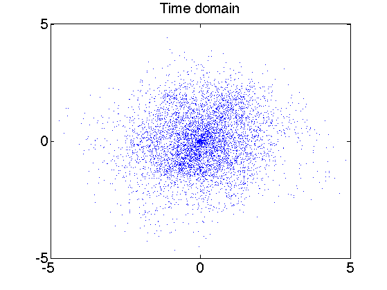
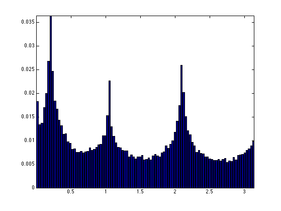
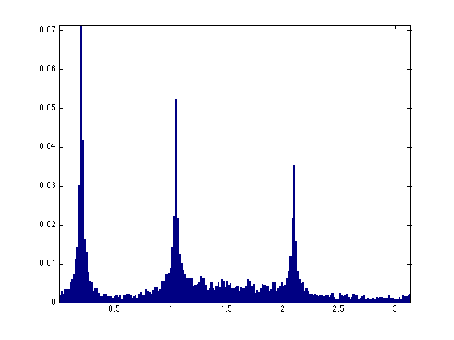
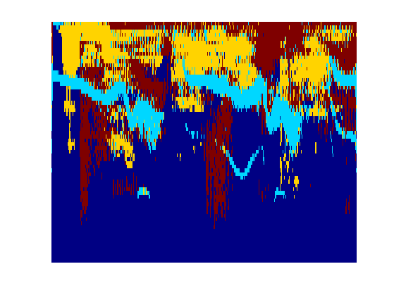
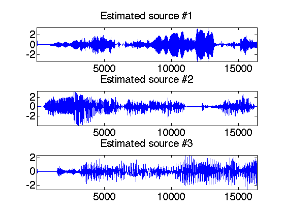

Source Separation with Sparsity
This numerical tour explore local Fourier analysis of sounds, and its application to source separation from stereo measurements.
Contents
Installing toolboxes and setting up the path.
You need to download the following files: signal toolbox and general toolbox.
You need to unzip these toolboxes in your working directory, so that you have toolbox_signal and toolbox_general in your directory.
For Scilab user: you must replace the Matlab comment '%' by its Scilab counterpart '//'.
Recommandation: You should create a text file named for instance numericaltour.sce (in Scilab) or numericaltour.m (in Matlab) to write all the Scilab/Matlab command you want to execute. Then, simply run exec('numericaltour.sce'); (in Scilab) or numericaltour; (in Matlab) to run the commands.
Execute this line only if you are using Matlab.
getd = @(p)path(p,path); % scilab users must *not* execute this
Then you can add the toolboxes to the path.
getd('toolbox_signal/'); getd('toolbox_general/');
Sound Mixing
We load 3 sounds and simulate a stero recording by performing a linear blending of the sounds.
For Scilab users, it is safer to extend the stack size. For Matlab users this does nothing.
extend_stack_size(4);
Sound loading.
n = 1024*16; s = 3; % number of sound p = 2; % number of micros options.subsampling = 1; x = zeros(n,3); [x(:,1),fs] = load_sound('bird', n, options); [x(:,2),fs] = load_sound('female', n, options); [x(:,3),fs] = load_sound('male', n, options); % normalize the energy of the signals x = x./repmat(std(x,1), [n 1]);
We mix the sound using a 2x3 transformation matrix. Here the direction are well-spaced, but you can try with more complicated mixing matrices.
% compute the mixing matrix theta = linspace(0,pi(),s+1); theta(s+1) = []; theta(1) = .2; M = [cos(theta); sin(theta)]; % compute the mixed sources y = x*M';
Display of the sounds and their mix.
clf; for i=1:s subplot(s,1,i); plot(x(:,i)); axis('tight'); set_graphic_sizes([], 20); title(strcat('Source #',num2str(i))); end
Display of the micro output.
clf; for i=1:p subplot(p,1,i); plot(y(:,i)); axis('tight'); set_graphic_sizes([], 20); title(strcat('Micro #',num2str(i))); end
Local Fourier analysis of sound.
In order to perform the separation, one performs a local Fourier analysis of the sound. The hope is that the sources will be well-separated over the Fourier domain because the sources are sparse after a STFT.
First set up parameters for the STFT.
options.n = n; w = 128; % size of the window q = w/4; % overlap of the window
Compute the STFT of the sources.
clf; X = []; Y = []; for i=1:s X(:,:,i) = perform_stft(x(:,i),w,q, options); subplot(s,1,i); plot_spectrogram(X(:,:,i)); set_graphic_sizes([], 20); title(strcat('Source #',num2str(i))); end
Exercice 1: (check the solution) Compute the STFT of the micros, and store them into a matrix Y.
exo1;
Estimation of Mixing Direction by Clustering
Since the sources are quite sparse over the Fourier plane, the directions are well estimated by looking as the direction emerging from a point clouds of the transformed coefficients.
First we compute the position of the point cloud.
mf = size(Y,1); mt = size(Y,2); P = reshape(Y, [mt*mf p]); P = [real(P);imag(P)];
Then we keep only the 5% of points with largest energy.
Display some points in the original (spacial) domain.
% number of displayed points npts = 6000; % display original points sel = randperm(n); sel = sel(1:npts); clf; plot(y(sel,1), y(sel,2), '.'); axis([-1 1 -1 1]*5); set_graphic_sizes([], 20); title('Time domain');
Exercice 2: (check the solution) Display some points of P in the transformed (time/frequency) domain.
exo2;

We compute the angle associated to each point over the transformed domain. The histograms shows the main direction of mixing.
Theta = mod(atan2(P(:,2),P(:,1)), pi()); % display histograms nbins = 100; [h,t] = hist(Theta, nbins); h = h/sum(h); clf; bar(t,h); axis('tight');
Exercice 3: (check the solution) The histogram computed from the whole set of points are not peacked enough. To stabilize the detection of mixing direction, compute an histogram from a reduced set of point that have the largest amplitude.
exo3;
Exercice 4: (check the solution) Detect the direction M1 approximating the true direction M by looking at the local maxima of the histogram. First detect the set of local maxima, and then keep only the three largest.
exo4;
M =
0.9801 0.5000 -0.5000
0.1987 0.8660 0.8660
M1 =
0.9803 0.5010 -0.5028
0.1973 0.8655 0.8644
Separation of the Sources using Clustering
Once the mixing direction are known, one can project the sources on the direction.
We compute the projection of the coefficients Y on each estimated direction.
A = reshape(Y, [mt*mf p]);
% compute the projection of the coefficients on the directions
C = abs( M1'*A' );
At each point x, the index I(x) is the direction which creates the largest projection.
% I is the index of the closest source
[tmp,I] = compute_max(C, 1);
I = reshape(I, [mf mt]);
An additional denoising is achieved by removing small coefficients.
% do not take into account too small coefficients
T = .05;
D = sqrt(sum( abs(Y).^2, 3));
I = I .* (D>T);
We can display the segmentation of the time frequency plane.
clf; imageplot(I(1:mf/2,:)); axis('normal'); set_colormap('jet');
The recovered coefficients are obtained by projection.
Proj = M1'*A'; Xr = []; for i=1:s Xr(:,:,i) = reshape(Proj(i,:), [mf mt]) .* (I==i); end
The estimated signals are obtained by inverting the STFT.
for i=1:s xr(:,i) = perform_stft(Xr(:,:,i),w,q, options); end
One can display the recovered signals.
clf; for i=1:s subplot(s,1,i); plot(xr(:,i)); axis('tight'); set_graphic_sizes([], 20); title(strcat('Estimated source #',num2str(i))); end
One can listen to the recovered sources.
i = 1; sound(x(:,i),fs); sound(xr(:,i),fs);